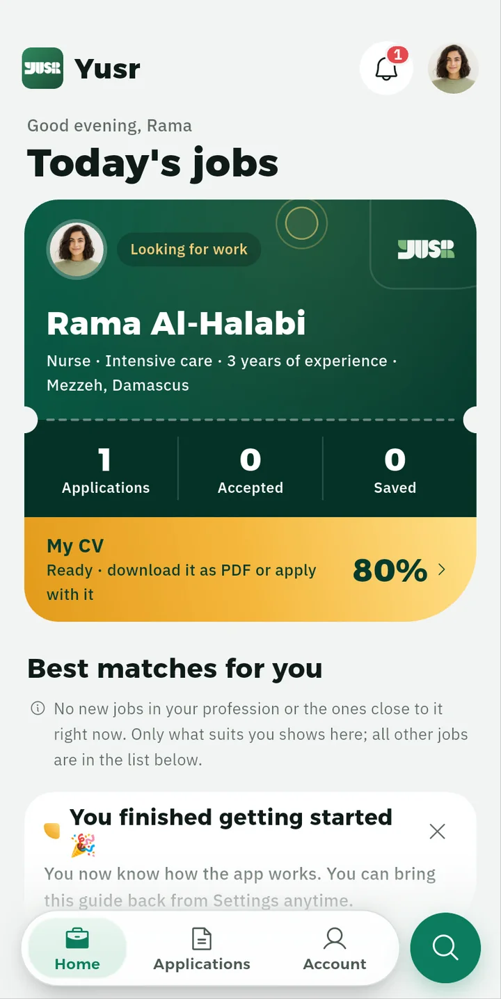
Jobs that fit you
Yusr knows your profession and level, so it suggests what suits you, and never offers a doctor a nurse’s job.
 عربيSoon
عربيSoon
Jobs · Homes · Vehicles
One account for jobs, homes and vehicles. Each world has its own screens and rules, and they never mix.
Work
Jobs that match your profession, with every detail: pay, hours and place.

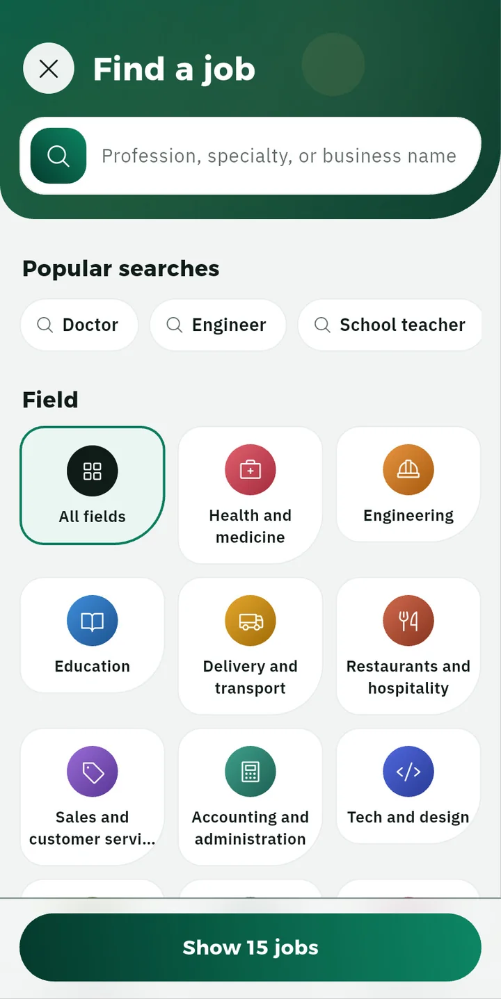
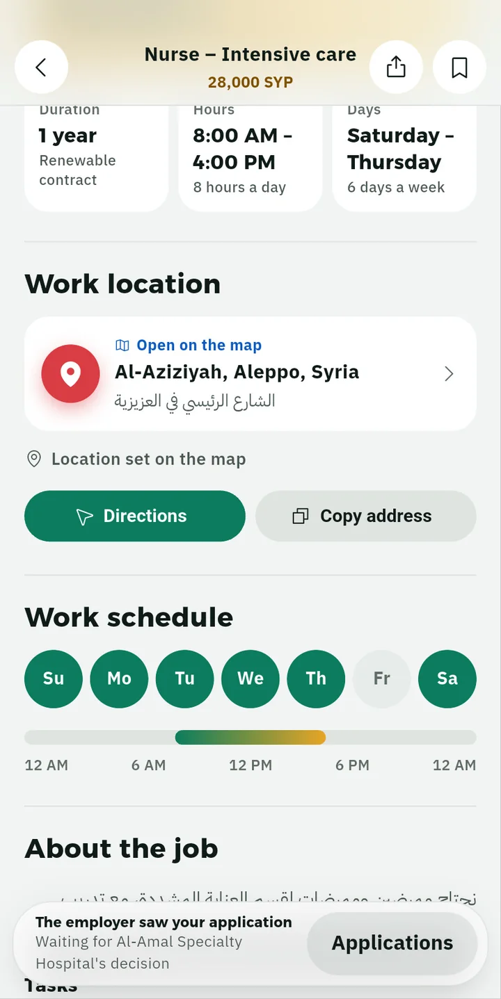
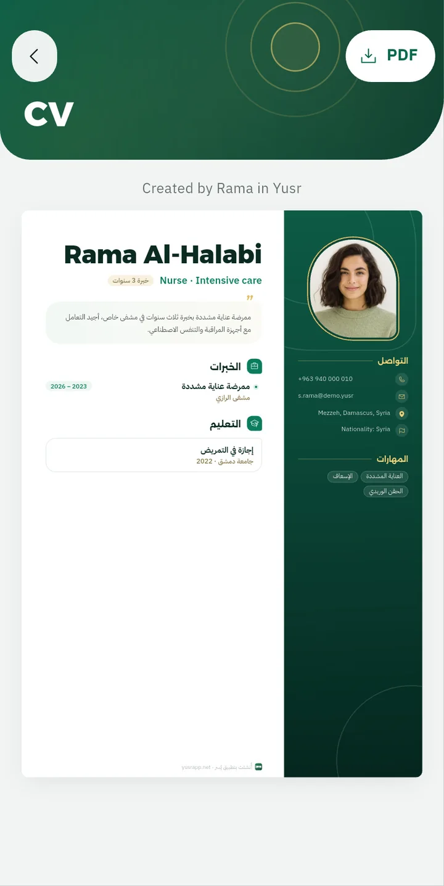
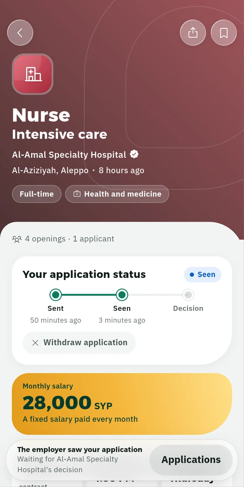

Yusr knows your profession and level, so it suggests what suits you, and never offers a doctor a nurse’s job.
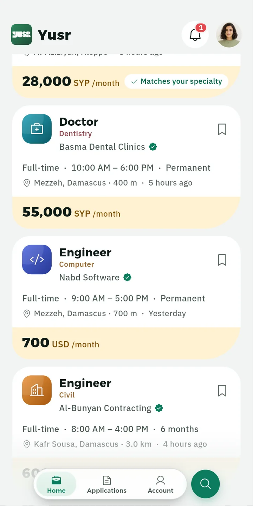
Within 1, 3 or 10 km of you. Your location is never stored or shared.
Monthly salary or daily wage, hours and place, and ratings from people who really worked there.
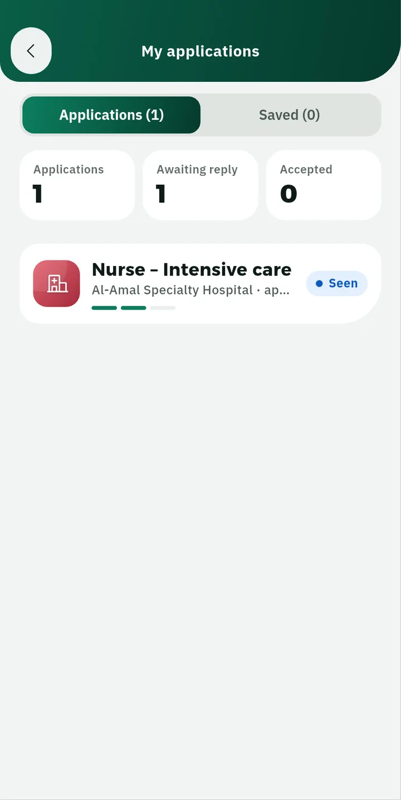
From “Sent” to “Decision”, then a chat with the employer inside the app.
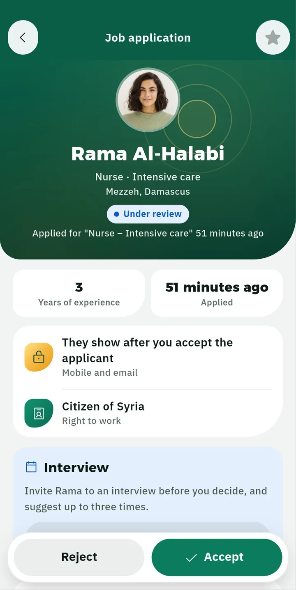
See who you reviewed and who is waiting, and invite to an interview with a clear time and place.
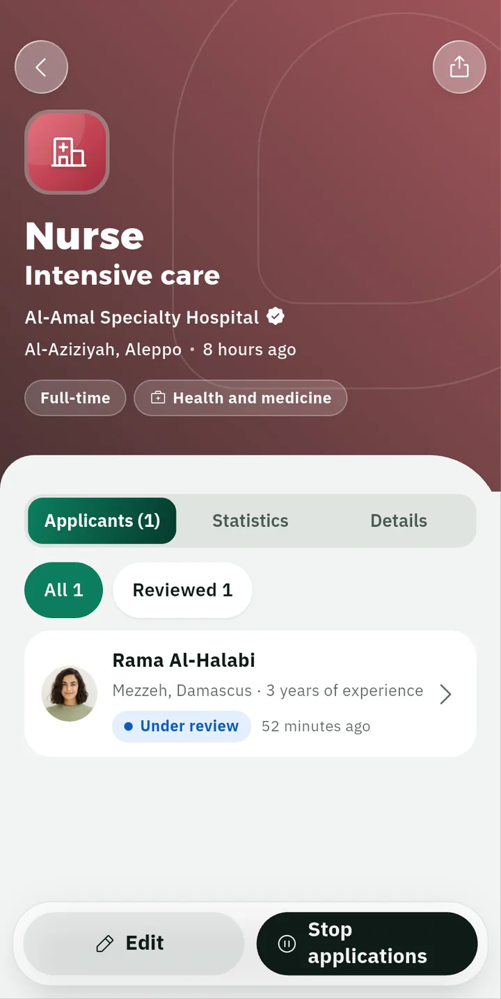
Who viewed it and who applied, day by day.
Home
A 360 tour inside the home, room by room.
Drag to look around · illustrative 360 photos
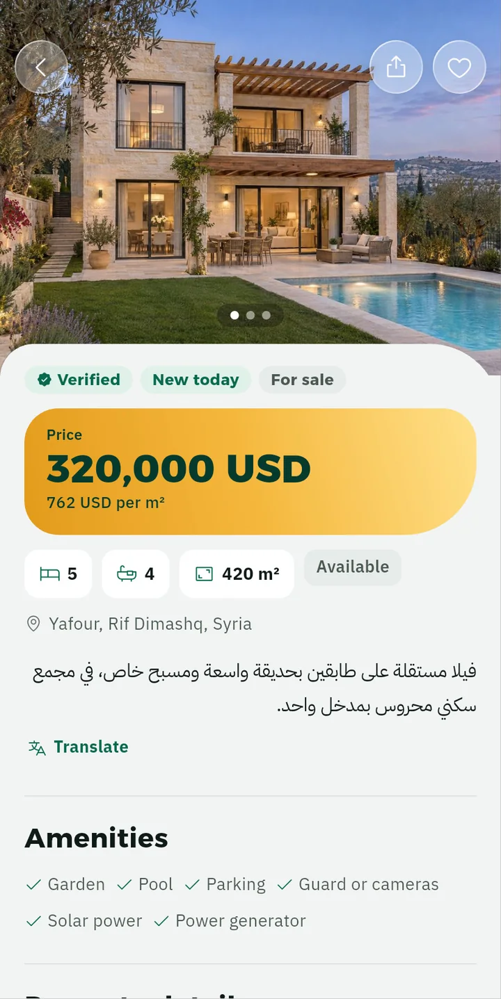
Large photos, clear badges and full details before you ask.
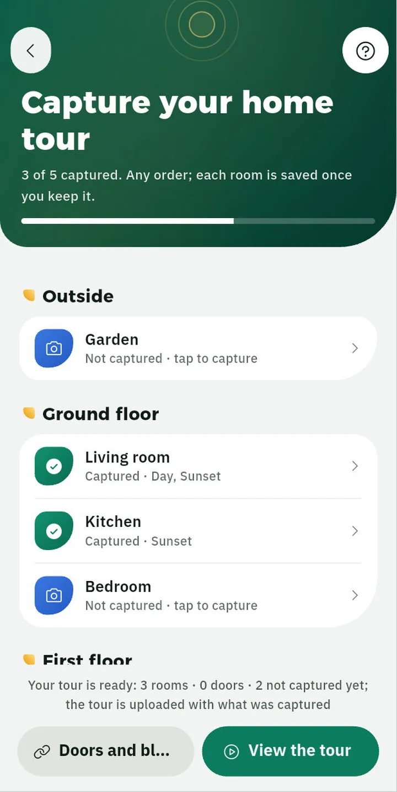
Room by room, in any order, and the app guides you shot by shot.
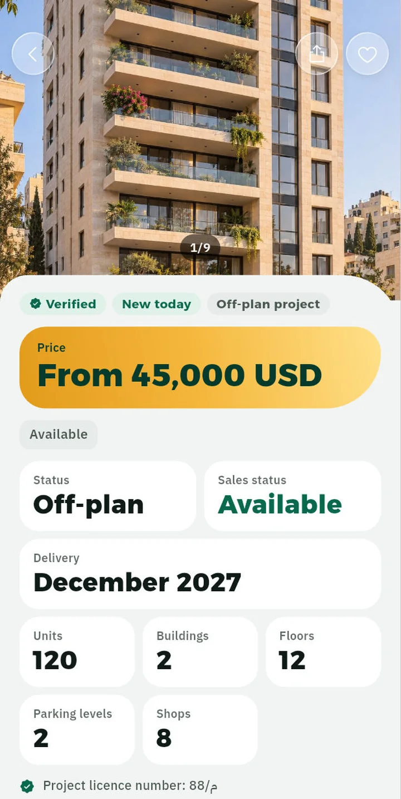
Unit types, prices and handover date, on the developer’s page.
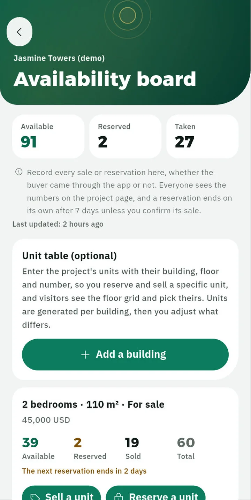
Available, reserved and sold, and you ask for a specific unit.
In your interest request you write the price that suits you. It reaches the owner only, and no one else sees it. No bidding, no auction.
Vehicle
An inspection report that colours the car part by part. Try it: pick a state, then tap a part.
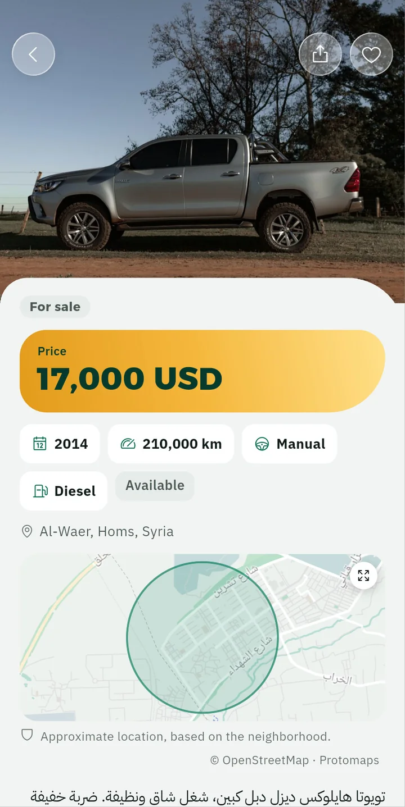
Full specs, the state of every part, and a test-drive booking.
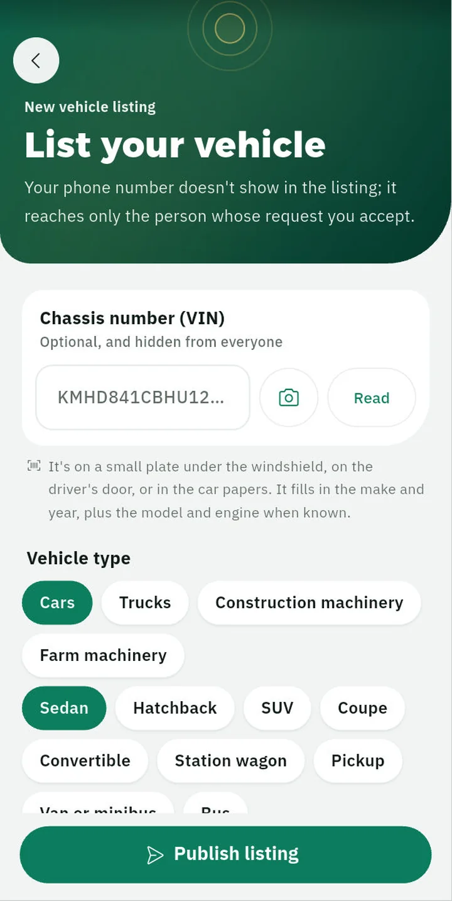
Choose the type and fill in the details. Your phone number never appears in the listing.
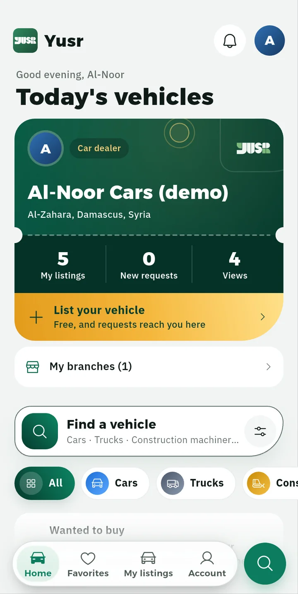
Your listings, branches and new requests, at first glance.
Yusr Assistant
An AI assistant inside the app: it writes your job description, your bio or your property listing with you, and you review and edit before publishing.
Coming after launch · where the service is available
Job description
Write it for meThe texts in the card are illustrative examples.
Statistics
Every listing has its numbers: who viewed it and how many requests it got. And the whole market has maps and reports built from Yusr’s own listings.
Views in the last 7 days
0People looking for a home in each governorate
In the last 7 days
0The numbers in these cards are illustrative examples that show how statistics look in the app.
Safety
 Job seeker
Job seeker Real-estate office
Real-estate office Developer
DeveloperYusr’s sky
The home screen’s sky follows your clock: a sun by day, a moon by night. Plus dark mode, in Arabic and English.
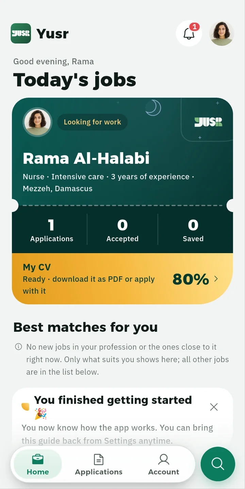
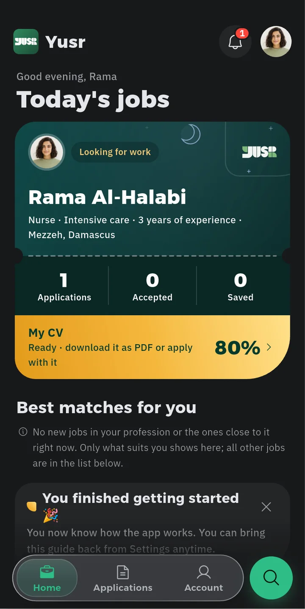
Yes. Searching, applying and posting are free, and there are no fees on property listings.
When you both agree to share numbers, after the request is accepted. Until then the numbers stay hidden.
No, your phone is enough. The app guides you shot by shot, then stitches the room itself.
With the right account type and a verification request inside the app, then a page with your identity that you manage yourself.
Yes. The app opens in your phone’s language, and you can change it in Settings any time.
Starting in Syria, built for the whole Arab world.